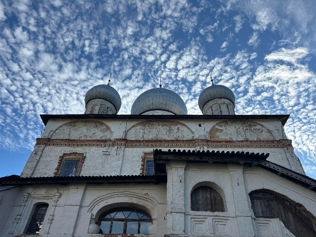
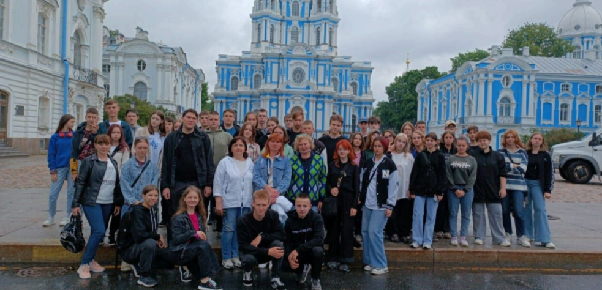
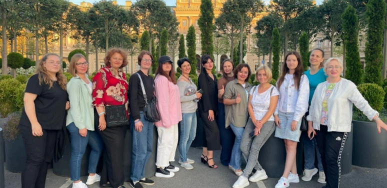

АВТОНОМНАЯ НЕКОММЕРЧЕСКАЯ ОРГАНИЗАЦИЯ "ЦЕНТР РЕАЛИЗАЦИИ СОЦИАЛЬНЫХ ИНИЦИАТИВ «МИРНЫЕ ЛЮДИ»
Организация 30 однодневных образовательных, исторических, патриотических, научно-популярных туристических экскурсий для студентов и рабочей молодежи по направлениям: Карелия, Ленинградская область и Санкт-Петербург
Значительная часть молодежной аудитории не обладает сегодня знаниями об истории страны в целом, региона проживания и близлежащих территорий. Более трети старших школьников России плохо знают историю своей страны, не могут установить простейшие хронологические и причинно-следственные связи, а также слабо знают историю Великой Отечественной войны.
Десятилетиями прошлое нашей страны обесценивалось, размывались базовые смыслы и понятия - такие, как любовь к Родине, национальная гордость.
Приглашая молодых людей в путешествие, открывая для них достопримечательности и рассказывая об исторических фактах, о героизме, самопожертвовании, о научном и творческом гении нашего народа, мы сможем вовлекать участников путешествий и в эмоциональные переживания, тонко воспитывая неравнодушное отношение к своей стране и людям, ее населяющим
 Количество благополучателей: 400 человек.
Количество волонтеров: 6 человек.